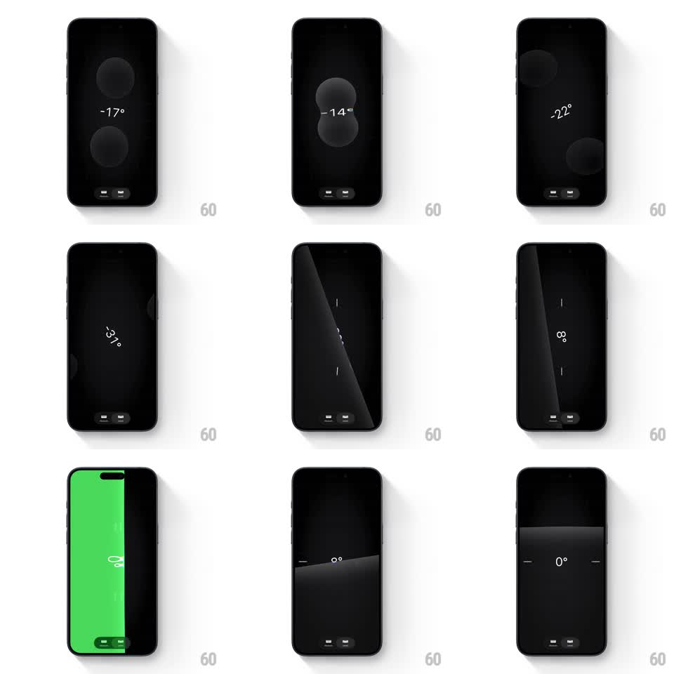

Media
Frame-by-frame

Rebuild this interaction 1:1: Apple Measure's level tool - two liquid-glass bubbles slide, morph, and merge across a dark screen as the device tilts, the degree readout tracking the angle until the bubbles unite and the whole screen flashes solid green at 0 degrees.

Rebuild this interaction 1:1: Apple Measure's level tool - two liquid-glass bubbles slide, morph, and merge across a dark screen as the device tilts, the degree readout tracking the angle until the bubbles unite and the whole screen flashes solid green at 0 degrees.
## Integration
Integration: stack-agnostic spec - springs given as stiffness/damping, timed motions as duration + curve; map every value to your framework and animation library of choice.
## Scene
Near-black screen: two large translucent glass spheres (frosted, with internal refraction and soft shadows), a thin white degree readout ("-17deg", "22deg", "0deg"), and two small square mode buttons at the bottom. In landscape the readout rotates with the device.
## Motion spec
Pattern: physics-driven liquid bubbles + level-lock celebration.
- Tilt response: the bubbles slide along the tilt axis like liquid in a vial, deforming (squash, stretch, wobble) with velocity; their motion carries slight lag and overshoot (spring ~120/10) for weight.
- Merge: when the spheres meet near center, they fuse into a single pill/blob with surface-tension pinch, then separate cleanly when tilt resumes.
- Readout: the degree text updates live and rotates to stay readable; digits cross-fade on change (100ms).
- Level lock: at 0deg the bubbles unite dead-center, the readout snaps to 0deg, and the entire background floods solid green (250ms) with a soft haptic-style pulse (scale 1.02 -> 1); leaving level cross-fades back to black (300ms).
## Calibration
- The glass must refract/distort what passes behind it - flat gray circles kill the liquid illusion.
- The green flash is earned only at true 0deg; near-level (+-1deg) stays dark.
## Reduced motion
Bubbles move without deformation; the level state changes color with a 200ms fade.
## Don't miss
- The merge/split uses metaball-style surface tension, not two circles overlapping.
- The degree readout is thin and quiet - it never competes with the bubbles.